Аннотации типов и документация кода · МДК.01.01 · разработка программных модулей
Глава 4.12
Sphinx: первый запуск
и состав папок
В этой главе Sphinx ставится в проект «Отчёт кафе» и собирает первый сайт. Порядок такой: установка, заготовка папки docs мастером, первая сборка и просмотр в браузере, правка главной страницы и повторная сборка, подготовка папки к репозиторию. Каждый шаг выполняется в VS Code и показан кадром. Описаний функций на первом сайте ещё нет — их подключает глава 4.13.
- Категория
- Пошаговая работа
- Время
- Около 45 минут
- Инструмент
- Sphinx
9.1.1 - Результат
- Папка
docsи своя главная страница сайта
Главы 4.12–4.16 относятся к Python. В ветке Go сайт документации строит pkgsite без настройки — он разобран в главе 4.6.
§1Что делает Sphinx
В главах 4.6–4.11 докстринги проекта читались тремя способами: в подсказке редактора, через help() в терминале и в файле docs/help.txt. Для каждого нужен открытый проект или запущенный Python. Тому, кто только знакомится с проектом или вызывает его модули из другой команды, удобнее сайт: оглавление, страница на каждый пакет, поиск по всем описаниям.
Sphinx — программа, которая собирает такой сайт. Она читает текстовые файлы в разметке reStructuredText (расширение .rst) и докстринги модулей проекта и записывает папку HTML-страниц. Страницы открываются в браузере прямо с диска, сервер для них не нужен. Sphinx написан на Python и ставится через pip, как Ruff и mypy. На нём собрана, например, документация самого Python на docs.python.org.
Ассоциация: вёрстка книги
Автор пишет главы, верстальщик по правилам издательства собирает из них книгу: оглавление, колонтитулы, указатель. Исправили абзац — книгу верстают заново по тем же правилам.
Главы — файлы .rst и докстринги. Правила вёрстки — файл conf.py. Верстальщик — команда sphinx-build: после правки докстринга сайт собирают той же командой.
Где не совпадаетВерстальщик может поправить текст. Sphinx переносит докстринг как есть: если условие пропущено в коде, его не будет и на сайте.
Путь от исходников до сайта
app/.
глава 4.13
В этой главе пройдены шаги 1, 3 и 4: сайт собирается из одного файла index.rst. Шаг 2 добавляется в главе 4.13.
§2Подготовка
Нужен третий архив темы — «Отчёт кафе» с аннотациями и докстрингами в формате Google, такой же проект получается после практики главы 4.11. Распакуйте архив, откройте папку otchet-kafe-dokumentirovan в VS Code, создайте окружение .venv и установите зависимости из requirements.txt, как в главе 4.1. Если практика 4.11 сделана, можно работать в своей папке.
Все команды главы выполняются в терминале VS Code (Terminal → New Terminal) из корня проекта: приглашение терминала заканчивается именем папки проекта. Команды записаны с путём к окружению, как в главе 4.3.
§3Установка Sphinx
Sphinx ставится в окружение проекта. Чтобы прочитать докстринги, он импортирует модули проекта, а импорт проходит только там, где установлены все зависимости проекта. Два шага: установка и проверка версии.
Установите Sphinx в .venv
Выполните .venv/bin/pip install sphinx.venv\Scripts\pip install sphinx. Установка занимает полминуты: вместе со Sphinx скачивается два десятка пакетов.
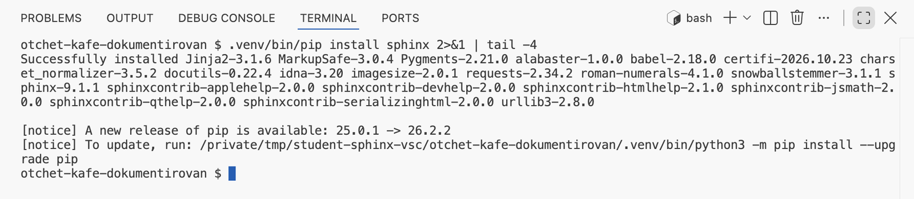
Successfully installed: за ней перечислены установленные пакеты, среди них sphinx-9.1.1, docutils (разбор reStructuredText), Jinja2 (шаблоны страниц) и Pygments (подсветка кода). На кадре команда дополнена | tail -4, чтобы показать только последние строки; у вас выше будет длинный список Collecting и Downloading.Проверьте версию
Выполните .venv/bin/sphinx-build --version.venv\Scripts\sphinx-build --version.
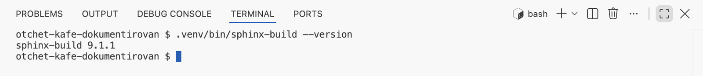
sphinx-build 9.1.1. Если вместо него No such file or directory или не является внутренней командой, Sphinx установлен в другое окружение: повторите первый шаг с путём .venv.Все выводы в главах 4.12–4.16 получены на версии 9.1.1. Sphinx печатает сообщения на языке системы; кадры сняты в терминале с русским языком. На английской системе вместо «сборка успешна» будет build succeeded, а предупреждение в обоих случаях начинается словом WARNING.
§4Заготовка папки docs
Файлы, из которых собирается сайт, создаёт мастер sphinx-quickstart. Он задаёт пять вопросов и по ответам пишет файл настроек и главную страницу. Мастер запускают один раз на проект. Четыре шага: запуск, ответы, файл настроек, главная страница.
Запустите мастер
Выполните .venv/bin/sphinx-quickstart docs.venv\Scripts\sphinx-quickstart docs. Слово docs в конце — папка, в которую мастер положит файлы.
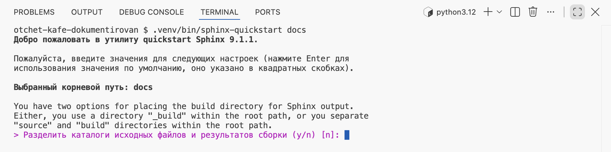
Выбранный корневой путь: docs и первый вопрос. Вопрос выделен цветом и начинается со знака >. В квадратных скобках — ответ по умолчанию: он принимается, если нажать Enter без ответа. Курсор ждёт ввода.Ответьте на вопросы
Вводите ответы по одному и после каждого нажимайте Enter:
- Разделить каталоги… —
y. Будут две папки:docs/sourceдля того, что пишут руками, иdocs/buildдля того, что собирает Sphinx. Так результат сборки не смешивается с исходниками. - Название проекта —
Отчёт кафе. Оно встанет в шапку страниц и заголовок вкладки браузера. - Имя(ена) автора(ов) — ваша фамилия и инициалы, для строки об авторе внизу страниц.
- Релиз проекта —
1.0, номер выпуска. - Язык проекта —
ru. Надписи, которые Sphinx пишет на страницах от себя («Навигация», «Поиск», «Параметры»), будут на русском.
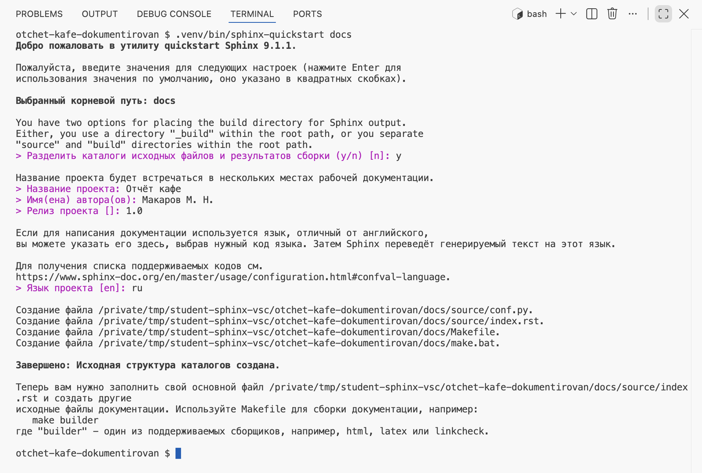
Создание файла: conf.py и index.rst в docs/source, Makefile и make.bat в docs. Итог — Завершено: Исходная структура каталогов создана. Последний абзац советует команду make; в курсе вместо неё используется sphinx-build, она одинаково записывается во всех системах.Откройте conf.py
В проводнике раскройте docs → source и откройте conf.py.
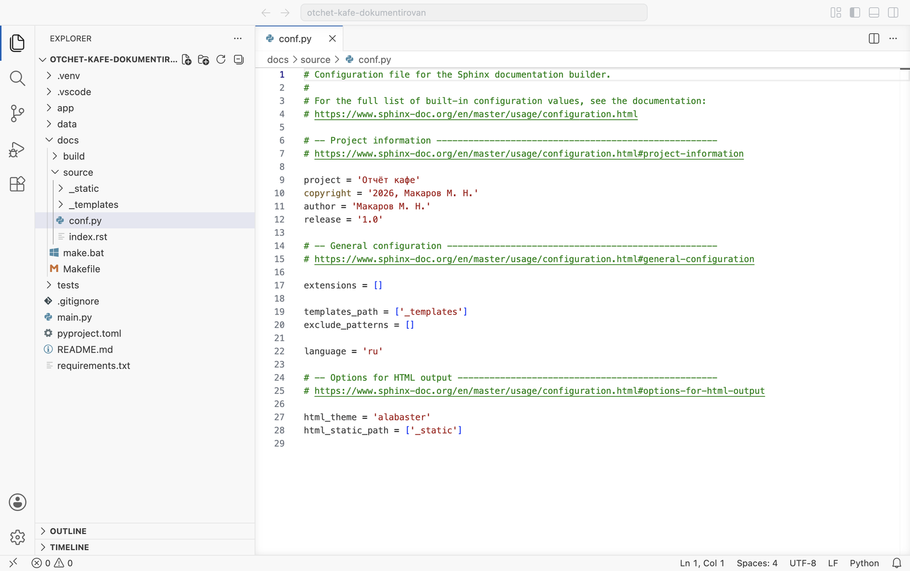
docs папки build и source, файлы make.bat и Makefile; в source — папки _static и _templates, файлы conf.py и index.rst. Справа — conf.py: ответы мастера в строках project, author, release и language. Список extensions пуст. Последние строки выбирают тему оформления alabaster, встроенную в Sphinx.conf.py — обычный файл Python. Sphinx выполняет его в начале каждой сборки и берёт из него значения переменных. В главе 4.13 сюда добавятся путь к проекту и расширения.
Откройте index.rst
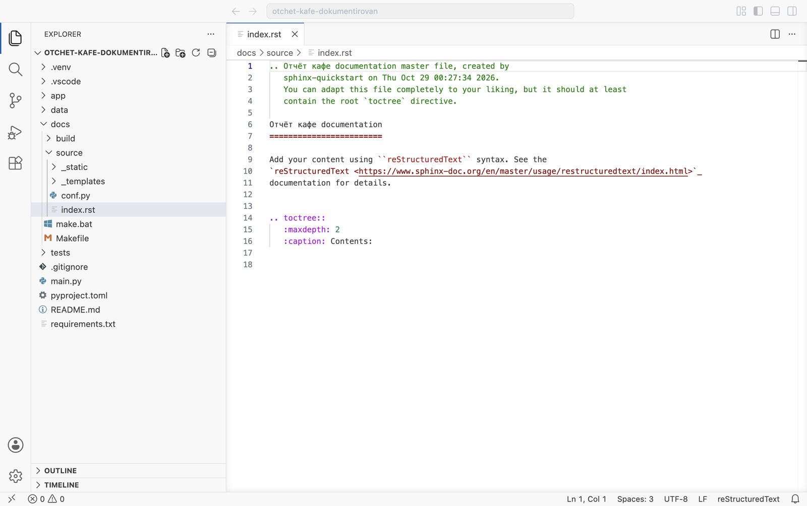
index.rst — главная страница сайта. Строки 1–4 — комментарий мастера, на страницу он не попадает. Строки 6–7 — заголовок и черта из знаков = под ним. Строки 9–11 — абзац на английском. Строки 14–16 — директива оглавления toctree.Две детали разметки понадобятся уже в этой главе. Черта под заголовком должна быть не короче текста заголовка. .. toctree:: — оглавление сайта: под ним с отступом в три пробела стоят параметры, а ниже, после пустой строки, перечисляют страницы. Сейчас страниц в нём нет.
§5Первая сборка
Заготовка готова, из неё можно собрать сайт. Три шага: сборка, папка с результатом, просмотр в браузере.
Соберите сайт
Выполните .venv/bin/sphinx-build -M html docs/source docs/build.venv\Scripts\sphinx-build -M html docs/source docs/build. Команда читается так: собрать вид html (ключ -M) из исходников docs/source в папку docs/build.
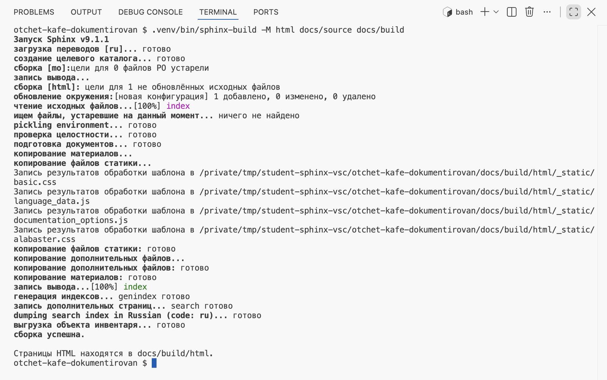
цели для 1 не обновлённых исходных файлов — найден один файл для сборки, index.rst; чтение исходных файлов…[100%] index — он разобран; запись вывода…[100%] index — записан index.html. Строки Запись результатов обработки шаблона — копирование стилей темы. Итог: сборка успешна. и адрес страниц docs/build/html.Найдите результат в проводнике
Раскройте в проводнике docs → build → html.
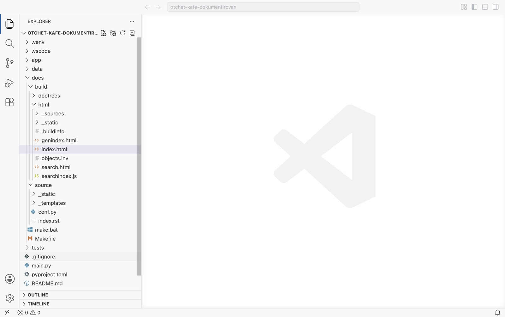
docs/build две папки. html — готовый сайт: index.html — главная, genindex.html — алфавитный указатель, search.html и searchindex.js — поиск, _static — стили темы. doctrees — служебная: Sphinx хранит там разобранные исходники для следующей сборки.Откройте сайт в браузере
Выполните open docs/build/html/index.htmlxdg-open docs/build/html/index.htmlstart docs\build\html\index.html. Другой способ — правая кнопка на index.html в проводнике → Reveal in FinderReveal in File ExplorerOpen Containing Folder, затем двойной щелчок по файлу.
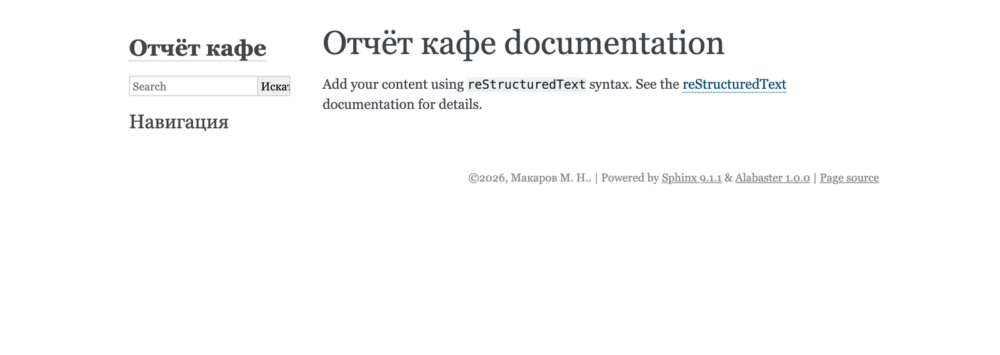
index.rst. Слева — колонка темы: название проекта из conf.py, поле поиска, «Навигация». Оглавление пустое, потому что в toctree нет страниц.§6Правка главной страницы
Сайт собирают заново после каждой правки. Четыре шага показывают, как Sphinx выбирает, что пересобрать: сборка без изменений, правка файла, сборка после правки, проверка в браузере.
Соберите ещё раз без изменений
Повторите ту же команду сборки.
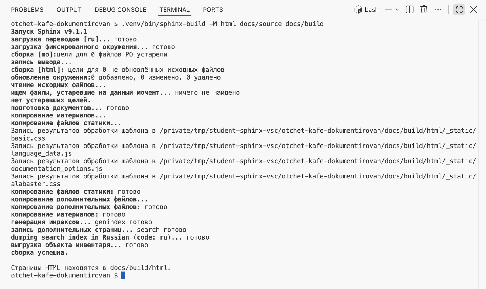
загрузка фиксированного окружения — Sphinx взял результат прошлого разбора из doctrees. Дальше цели для 0 и нет устаревших целей.: изменённых файлов нет, страницы не переписаны.Такая сборка называется инкрементной: пересобирается только то, что изменилось. Полную пересборку включает ключ -E в конце команды. Он понадобится в главах 4.13–4.14: предупреждения в файлах, которые не менялись, инкрементная сборка не повторяет.
Замените заголовок и абзац в index.rst
Заголовок — Отчёт кафе, черта под ним — десять знаков =, по длине заголовка. Абзац из трёх строк замените своим описанием проекта. В оглавлении замените Contents: на Содержание:. Сохраните файл.
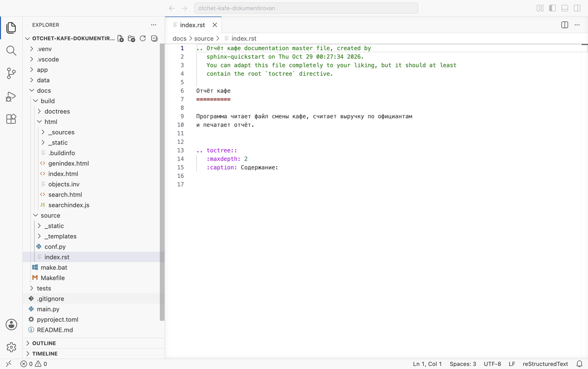
index.rst после правки. Строки 6–7 — новый заголовок с чертой той же длины, строки 9–10 — абзац о программе, строка 15 — подпись оглавления «Содержание:».Соберите после правки
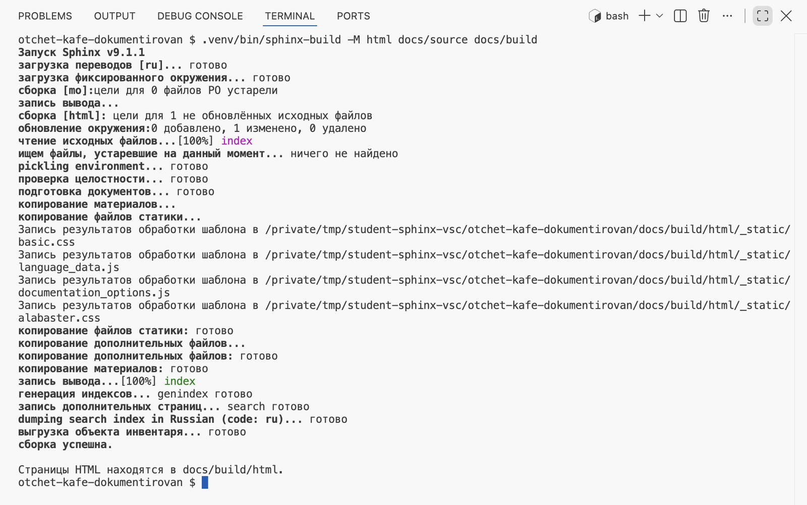
цели для 1 и обновление окружения: 0 добавлено, 1 изменено, 0 удалено — Sphinx нашёл изменённый index.rst, перечитал и переписал только его.Обновите страницу в браузере
Вкладка с сайтом уже открыта — обновите её: CtrlCmd + R.
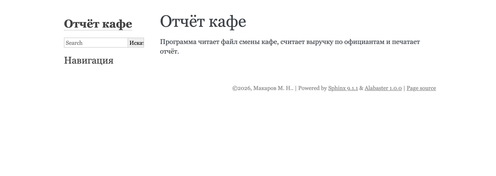
§7Папка docs и репозиторий
Перед первым коммитом нужно решить, что из docs попадёт в Git. docs/source, Makefile и make.bat пишутся руками — их хранят. docs/build получается из них одной командой — её в Git не кладут: каждая сборка меняет в ней десятки файлов. Два шага.
Проверьте .gitignore
Откройте .gitignore в корне проекта.
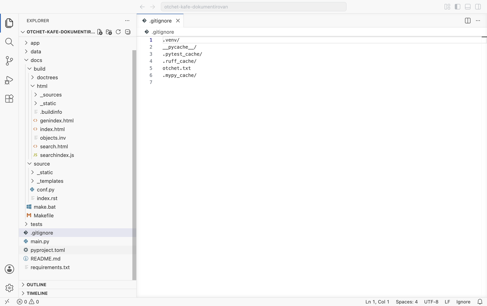
docs/build/: в третьем архиве она уже есть. Если вы работаете в своей папке, допишите её.Положите .gitkeep в _static
Папка docs/source/_static пуста, а пустые папки Git не хранит. В копии проекта, скачанной из репозитория, её не будет, и сборка напечатает WARNING: элемент html_static_path '_static' не существует. Чтобы папка попала в репозиторий, в неё кладут пустой файл: правая кнопка на _static → New File → .gitkeep.
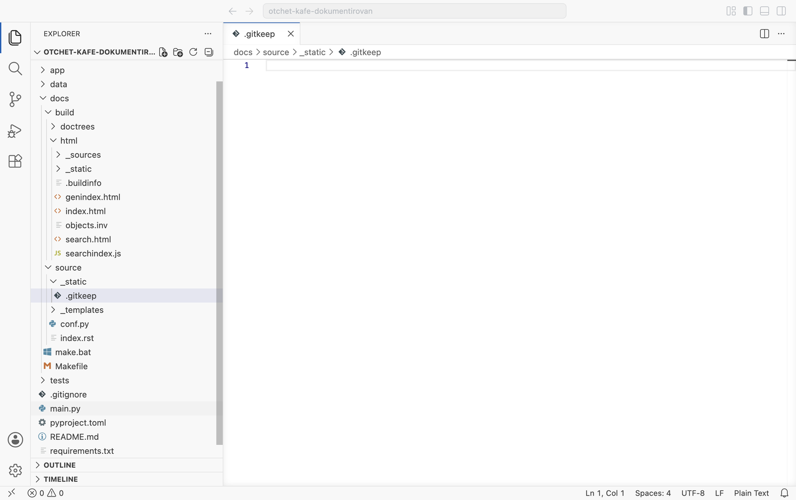
_static появился пустой .gitkeep. Для Git имя ничего не значит; это соглашение: файл держит папку в репозитории.В проекте есть папка docs. Команда sphinx-build -M html docs/source docs/build отвечает сборка успешна., главная страница со своим текстом открывается в браузере. docs/build исключена из Git, в _static лежит .gitkeep.
§8Попробуйте сами
Два опыта на том же проекте. Каждый показывает, как Sphinx сообщает о том, что изменилось.
Попробуйте сами · главная страница
Черта короче заголовка
- В
index.rstукоротите черту под заголовком до пяти знаков=====и сохраните. - Соберите сайт той же командой.
- Верните черту длиной в заголовок и соберите ещё раз.
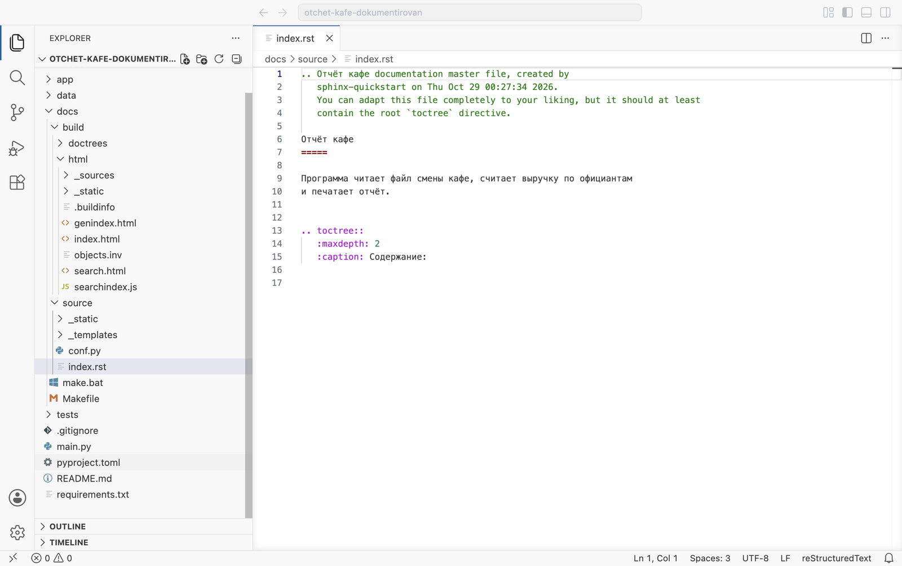
7 короче заголовка.Сборка проходит, но в выводе появляется красная строка предупреждения, а итог меняется на сборка успешна, 1 предупреждение.
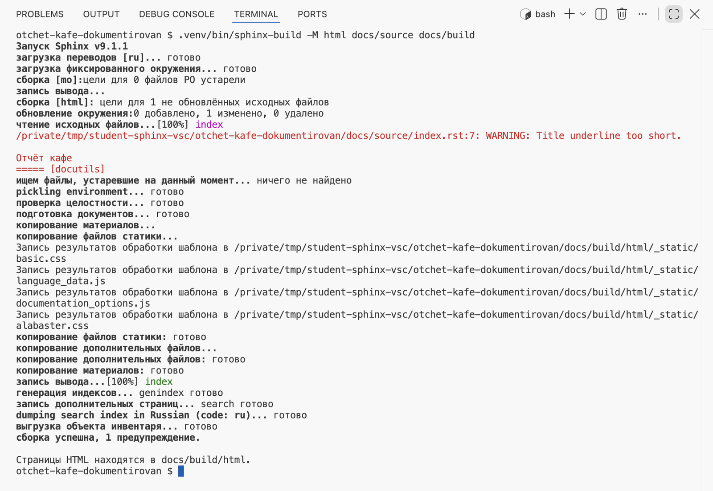
index.rst:7, уровень WARNING, текст «черта заголовка слишком короткая». Ниже — фрагмент исходника, в скобках — источник замечания docutils, библиотека разбора reStructuredText. После возврата черты предупреждение пропадает.Язык интерфейса
- В
conf.pyзаменитеlanguage = 'ru'наlanguage = 'en', соберите и обновите страницу. - Верните
'ru'и соберите с ключом-E.
После смены языка в выводе есть строка несоответствие build_info: настройки изменились, и Sphinx пересобрал всё. На странице «Навигация» сменилась на Navigation, кнопка поиска — на Go. Текст из index.rst остался русским: язык меняет только надписи темы.
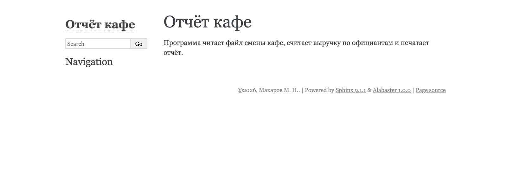
language = 'en'.§9Проверьте себя
Почему Sphinx ставят в окружение проекта?
Чтобы прочитать докстринги, Sphinx импортирует модули проекта. Импорт проходит только там, где установлены зависимости проекта, — в его окружении.
Какие два файла из docs правят руками?
docs/source/conf.py — настройки сборки и docs/source/index.rst — главная страница с оглавлением.
Что означают части команды sphinx-build -M html docs/source docs/build?
-M html — вид результата, docs/source — исходники и conf.py, docs/build — папка результата. Сайт окажется в docs/build/html.
Что напечатает сборка, если ни один файл не менялся?
цели для 0 не обновлённых исходных файлов и нет устаревших целей. Страницы не переписываются. Пересобрать всё заставляет ключ -E.
Зачем в пустой папке _static файл .gitkeep?
Git не хранит пустые папки. Без файла папки не будет в репозитории, и сборка из скачанной копии напечатает предупреждение о _static.
.venv/bin/pip install sphinx
sphinx-build --version
sphinx-quickstart docs
y · название · автор · 1.0 · ru
sphinx-build -M html docs/source docs/build
-E — пересобрать всё
docs/build/html/index.html
docs/source/conf.py
docs/source/index.rst
docs/build/ в .gitignore
_static/.gitkeep
Итог главы
Sphinx собирает сайт документации из файлов reStructuredText и докстрингов и ставится в окружение проекта. Мастер sphinx-quickstart docs создаёт папки docs/source и docs/build, файл настроек conf.py и главную страницу index.rst. Команда sphinx-build -M html docs/source docs/build собирает сайт в docs/build/html, он открывается в браузере с диска. Повторная сборка пересобирает только изменённые файлы, ключ -E — все. В репозиторий идут исходники документации: docs/build исключена в .gitignore, пустую _static держит файл .gitkeep. В главе 4.13 на сайт выводятся докстринги модулей.
- Установка, мастер и первая сборка — Sphinx, Getting started.
- Ключи
-Mи-E— sphinx-build. - Настройка
language— Sphinx, Configuration. - Кадры сняты в VS Code на третьем архиве сценарием
shots/shoot_sphinx.py, страницы сайта —shots/sphinx_run.py, Sphinx 9.1.1.